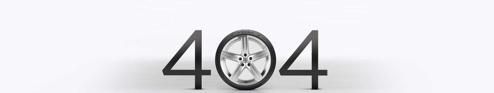

<ion-header [translucent]="true">
  <ion-toolbar>
    <ion-title>Error 404</ion-title>
  </ion-toolbar>
</ion-header>

<ion-content [fullscreen]="true" class="img-404">
  <body>
    <div class="contenedor-imagen">
      

      <div>
        <a href="home">
            <ion-button>HOME</ion-button>
        </a>
    </div>
    </div>
  </body>
</ion-content>